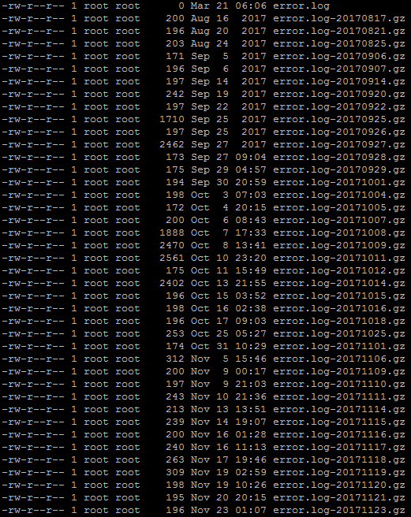
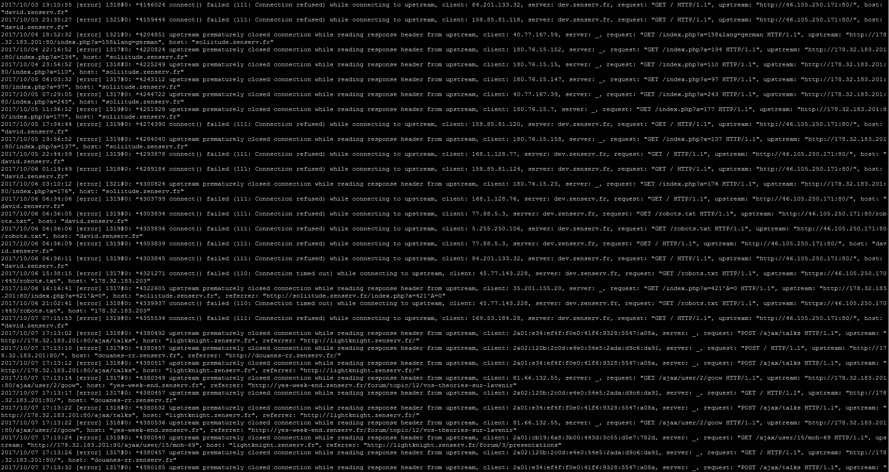
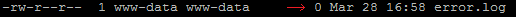
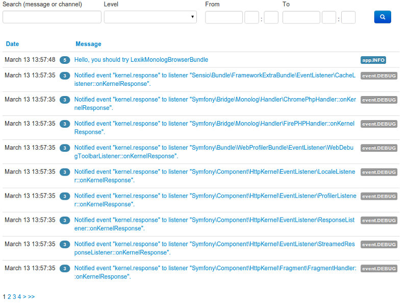

Sentry
Tracking de bugs en temps réel
Une problématique récurrente...
Ère PHP procédural (~antiquité)
Etape 1 : Localiser le bon fichier de log !

Etape 2 : Elle est où mon erreur !?

WTF !? Un bug dans apache !!!

Problématiques
- Verbeux
- Données non agrégées
- Chronophage
- Pas fiable
- Trop de données
- Difficulté à remonter dans le temps (logrotate)
Interface graphique via lexikMonologBundle
